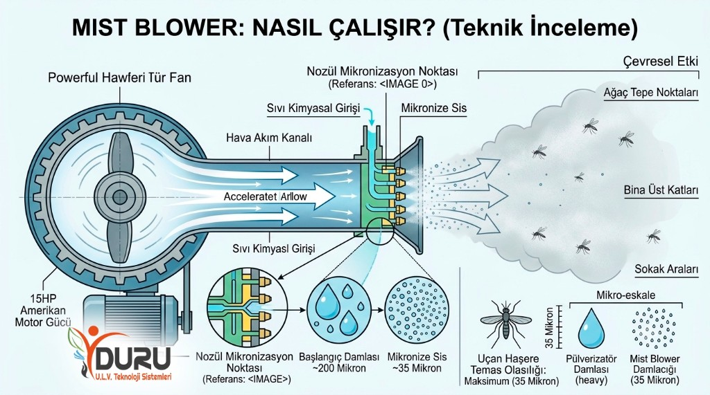
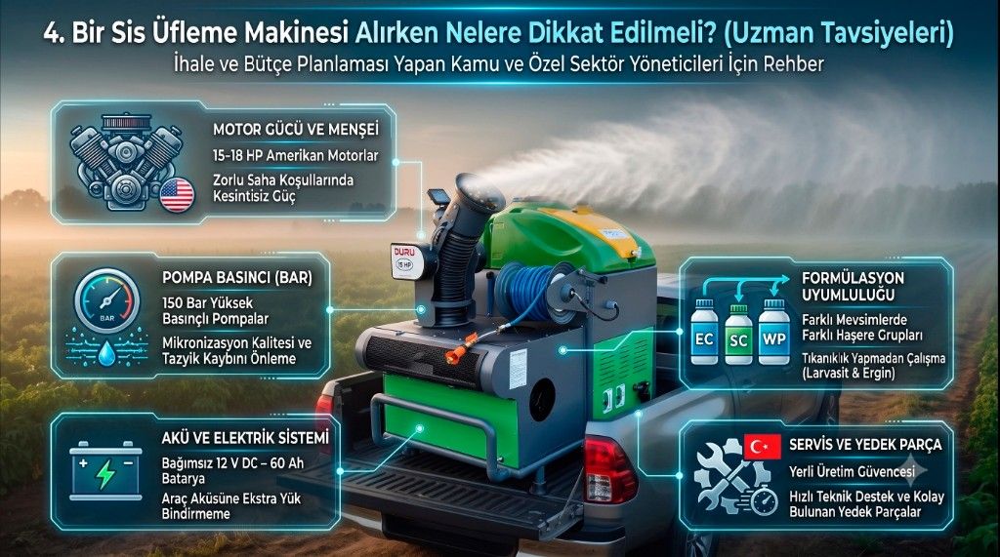

Sis Üfleme Makinesi (Mist Blower) Nedir ve Nasıl Çalışır?
Geniş alanlarda, tarım arazilerinde veya şehir içi sokaklarda zararlılarla mücadele etmek, doğru teknoloji olmadan hem zaman hem de bütçe israfına dönüşebilir. İşte tam bu noktada sis üfleme makinesi (sektörel adıyla mist blower) devreye girer.
Sivrisinek, karasinek, kene ve pire gibi halk sağlığını doğrudan tehdit eden vektörlere karşı en etkili silah olan bu cihazlar; güçlü bir fan sistemi yardımıyla yüksek hızda hava akımı yaratarak sıvı formdaki kimyasal ilaçları (insektisit, larvasit veya dezenfektan) çok uzak mesafelere püskürten profesyonel ilaçlama makineleridir.
Mist Blower ile Standart Pülverizatör Arasındaki Fark Nedir?
Basit su pompalarından veya standart pülverizatörlerden en büyük farkı, ilacı sadece su basıncıyla değil, yüksek debili hava akımıyla hedefe ulaştırmasıdır. Bu devrim niteliğindeki çalışma prensibi sayesinde sıvı damlacıklar hedeflenen 35 mikron seviyesine kadar küçültülür ve adeta bir sis bulutuna dönüştürülür.
Hava akımı ile taşıma
- Güçlü fan ve yüksek debili hava akımı
- Yoğun sis bulutu — geniş alan kaplaması
- Sokak araları, ağaç tepeleri, bina üst katları
- 35 mikron hedef damlacık boyutu
Su basıncı ile püskürtme
- Pompa basıncına dayalı dağılım
- Daha iri damlacıklar — hızlı çökme eğilimi
- Kısa menzil, sınırlı havada asılı kalma
- Uçan haşere temasında düşük verim

Optimum damlacık boyutu
- Havada uzun süre asılı kalır
- Uçan haşere temas olasılığını artırır
- Geniş alanlara homojen dağılım sağlar
Sivrisinek mücadelede hedef mikron çapı
İlacın havada asılı kalması ile maksimum temas
Amerikan motor ile kesintisiz saha performansı
Damlacık Boyutu Neden Bu Kadar Önemlidir?
Bir sis üfleme makinesi kullanırken en kritik parametre mikron çapıdır. Sivrisinek gibi uçan haşerelerle mücadelede ilacın yere hemen düşmemesi hayati önem taşır.
Havada Asılı Kalma
35 mikron boyutundaki bir damlacık havada uzun süre asılı kalır.
Maksimum Temas
Uçan haşerenin ilaçla temas etme olasılığı maksimize edilir.
Geniş Alan Kaplaması
Güçlü Amerikan motorları sayesinde sis bulutu; sokak aralarında binaların üst katlarına, ağaçların tepe noktalarına ve rüzgarın yardımıyla çok geniş dönümlere ulaşır.
Sahada Fark Yaratan Teknolojiler: Profesyonel Mist Blower Modelleri
Kullanıcıların yüksek performans, dayanıklılık ve kullanım kolaylığı beklentilerini karşılamak üzere tasarlanan araç üstü profesyonel mist blower modellerini detaylıca inceleyelim. Aşağıdaki her iki cihaz da pick-up veya kamyonet kasalarına kolayca entegre edilebilir; Mist Blower, ULV ve Pulverizatör özelliklerini tek bir kasada birleştirir.
Duru Mist Blower 15HP (400L) İncelemesi

Kompakt yapısı, güçlü 15 HP Amerikan motoru ve 400 litrelik ideal tank kapasitesiyle Duru Mist Blower 15HP (400L), özellikle dar sokaklara sahip ilçeler, orta ölçekli belediyeler ve büyük tatil köyleri için biçilmiş kaftandır.
Cihazın en büyük avantajı, 3 farklı püskürtme sistemini (Mist blower – ULV – Pulverizatör) bünyesinde barındırmasıdır. 30 metrelik holder hortumu, aracın giremediği park içlerine, bina bodrumlarına veya çöp toplama alanlarına yaya olarak müdahale etme şansı tanır.
| Kullanım Tipi | Araç Üzeri (Model DMB-15HP-400) |
|---|---|
| Motor | 15 Hp Amerikan Motor |
| Batarya | 12 V DC – 60 Ah |
| İlaç Tank Kapasitesi | 400 Litre |
| Püskürtme Sistemleri | Mist blower – ULV – Pulverizatör |
| Pompa | 14 Litre / Dakika, 150 Bar Basınç |
| ULV Mikron Değeri | 35 Mikron (Sabit) |
| Holder Hortum | 30 Metre |
| Ağırlık | 340 kg |
Eğer manevra kabiliyeti yüksek standart bir pick-up kullanacaksanız ve araç üzerindeki ağırlık dengesini korumak istiyorsanız, 340 kg boş ağırlığı ile bu cihaz en ergonomik ve güvenli çözümdür.
Entosis Mist Blower (500L) İncelemesi

Geniş bulvarlar, büyükşehir belediyelerinin sorumluluk alanları ve devasa tarım arazileri için tasarlanmış tam bir güç merkezidir. Entosis Mist Blower (500L) modeli, 500 litrelik devasa tankı ve hayat kurtaran joystick kumanda paneli ile öne çıkar.
Operatör, araç kabininden hiç çıkmadan elindeki joystick ile makinenin başlığını sağa-sola 340 derece, yukarı-aşağı 210 derece yönlendirebilir. 6+1 nozul sistemi, atılan ilacın mükemmel bir homojenlikle dağılmasını sağlar.
| Kullanım Tipi | Araç Üzeri (Model EMB-500) |
|---|---|
| Motor | 15 Hp – 18 Hp Amerikan Motor |
| Kumanda Sistemi | Joystick Hareketli (Kabin içinden kontrol) |
| Başlık Hareketi | 340° Sağa-Sola, 210° Yukarı-Aşağı |
| İlaç Tank Kapasitesi | 500 Litre |
| Yakıt Tüketimi / Depo | 4 Litre/Saat – 30 Litre Yakıt Deposu |
| Pompa | 14 Litre / Dakika, 150 Bar |
| Püskürtme Sistemleri | Mist blower – ULV – Pulverizatör |
| İlaç Formülasyonu | SC – EC – WP Uyumlu |
| Nozul Sayısı | 6+1 Adet |
| ULV Mikron Değeri | 35 Mikron |
| Holder Hortum / Ağırlık | 30 Metre (İsteğe bağlı 50 m) / 400 kg |
| Ekstra Donanımlar | 15 Litre El Yıkama Tankı |
Maksimum ilaçlama kapasitesi ve minimum personel eforu hedefleniyorsa Entosis en iyi alternatiftir. Kabin içi joystick sistemi operatör güvenliğini sağlarken, 15 litrelik el yıkama tankı İSG standartlarını karşılar.
Hızlı Model Karşılaştırması
| Özellik | Duru Mist Blower 15HP | Entosis Mist Blower 500L |
|---|---|---|
| Tank | 400 L | 500 L |
| Ağırlık | 340 kg | 400 kg |
| Kumanda | Manuel / sabit başlık | Joystick (340° / 210°) |
| İdeal Kullanım | Dar sokak, pick-up | Geniş bulvar, büyükşehir |
| Ekstra | 30 m holder hortum | 15 L el yıkama tankı |
Profesyonel Bir Sis Üfleme Makinesi Alırken Nelere Dikkat Edilmeli?
İhale şartnamesi hazırlayan kamu görevlileri, belediye satın alma birimleri veya özel tarım işletmeleri için doğru sis üfleme makinesi seçimi hayati önem taşır. İşte uzmanlardan dikkat etmeniz gereken 5 temel kriter:
Motor Menşei ve Gücü
Uzun saatler süren saha mesailerinde motorun performans kaybetmemesi kritiktir. 15–18 HP Amerikan motorlar en zorlu sıcaklıklarda bile kesintisiz güç sağlar.
01Pompa Basıncı (Bar)
150 bar yüksek basınçlı pompalar, nozullardan geçerken mikronizasyon kalitesini belirler ve pülverizatör modunda tazyik kaybını önler.
02Bağımsız Elektrik Sistemi
Makinenin aracın aküsünü bitirmemesi için kendi 12 V DC – 60 Ah bataryası bulunmalıdır.
03Formülasyon Uyumluluğu
EC, SC ve WP gibi farklı kimyasal formlarla tıkanıklık yapmadan çalışabilmesi, tek makine ile hem larvasit hem ergin mücadelesi yapılabilmesini sağlar.
04Servis ve Yedek Parça
Sezonun en yoğun döneminde yaşanacak basit bir hortum yırtılması operasyonu durdurabilir. Yerli üretim, hızlı teknik destek ve yedek parça temini birinci tercih olmalıdır.
05
Mist Blower ile Doğru İlaçlama Uygulaması İçin Pratik Bilgiler
Makinenizin donanımı ne kadar üstün olursa olsun, sahada uygulamanın doğruluğu başarı oranını doğrudan etkiler. Sis üfleme makinesi ile maksimum verim almak için şu kurallara dikkat etmelisiniz:
-
Doğru Zamanlama
Sivrisinek mücadelesi için en etkili saatler, sıcaklık invertajının yaşandığı akşam gün batımı saatleri ve sabahın ilk ışıklarıdır. Rüzgarın sakin (1–15 km/s) olduğu zaman dilimleri seçilmelidir.
-
Sabit Araç Hızı
Uygulama sırasında araç hızının saatte ortalama 10–15 km civarında sabit tutulması, atılan sis bulutunun metrekare başına eşit ve homojen düşmesini sağlar.
-
Günlük Bakım ve Temizlik
İlaçlama bittikten sonra tankta asla kimyasallı su bırakılmamalıdır. Sistem temiz su devridaimi ile yıkanmalıdır. (Özellikle Entosis modelindeki temiz su tankı bu işlemi saniyeler içinde halletmenizi sağlar).
Sonuç: Uzun Vadeli ve Kesin Çözüm İçin Harekete Geçin
Şehirlerde veya tarım alanlarında vektörlerle mücadele etmek tek seferlik bir işlem değil, doğru teknoloji ile sürdürülebilir bir strateji gerektirir. Güçlü Amerikan motorları, 35 mikron teknolojisi ve çok fonksiyonlu püskürtme sistemleri (Mist, ULV, Pülverizatör) ile Duru Mist Blower 15HP (400L) ve Entosis Mist Blower (500L) modelleri sahada en büyük güvenceniz olacaktır.
Mevcut sorunlarınıza en uygun sis üfleme makinesi modelini belirlemek, detaylı teknik özellik karşılaştırması yapmak ve kurumunuza özel fiyat bilgisini öğrenmek için hemen üreticiyle iletişime geçebilir; iş sağlığı ve çevre standartlarına uygun, yıllarca sorunsuz kullanacağınız bir alım gerçekleştirebilirsiniz.